매장별 출고 단위를 서열대로 팔레트에 묶어 로봇 셀로 보내고, 시뮬레이터 워커의 응답과 매니페스트, 실패 경로, 가정 시나리오를 확인합니다.
무엇을 · 왜#
출고는 매장별로 쌓는 순서가 중요합니다. 이 화면은 출고 단위에 서열 위치와 목표 팔레트를 정하고, 같은 팔레트로 묶인 항목을 한 번의 PALLETIZE 명령으로 로봇 셀에 보냅니다. 설비가 없어도 끝까지 실행해 볼 수 있도록 저장소에 시뮬레이터 워커가 들어 있습니다. 워커는 게이트웨이 계정으로 로그인해 실제 설비와 똑같은 함수로 결과를 보고합니다.
샘플의 범위
- 출고 단위는 재고를 확인하거나 예약하지 않습니다. 완료되어도 재고 원장에서 빠지지 않습니다.
- 서열 위치와 팔레트는 화면이 계산하지 않습니다. 운영자가 정한 값을 저장하고 검증합니다.
- 시뮬레이터는 타이밍과 실패율만 흉내 냅니다. 물리 시뮬레이션이나 3차원 동작은 이 커밋에 없습니다.
- 가정 시나리오의 추정은
회전 수 = 명령 수 / 설비 수에 평균 시간을 곱한 단순 계산입니다. 대기열과 재시도를 반영하지 않으며 화면에도OPTIMISTIC_ESTIMATE로 표시됩니다.
따라 하기#
cd supabase && supabase db reset으로 처음 상태로 되돌린 뒤 시작합니다. WCS Equipment에서 wh-manager-a@demo.local로 CELL-01, CELL-02(Type ROBOT_CELL, Zone ZONE-PACK)를 등록하고, 앞 장처럼 게이트웨이 보고로 상태를 IDLE로 바꿉니다.
- 시뮬레이션 켜기. WCS Simulation을 엽니다. 두 대 모두
REAL입니다.CELL-01의 Simulate를 누르면SIMULATED가 되고 Source는기본값입니다. 기본값은 ack 500ms~1.5s, progress 1.0s~3.0s, completion 2.0s~5.0s, 실패율 5%입니다.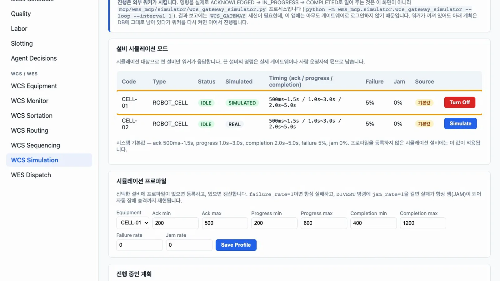
Simulate - 프로파일. 결과의 변동을 줄이도록 Ack 500~800, Progress 800~1200, Completion 1200~1800, Failure rate 0을 넣고 Save Profile을 누릅니다. Source가
등록 프로파일로 바뀝니다.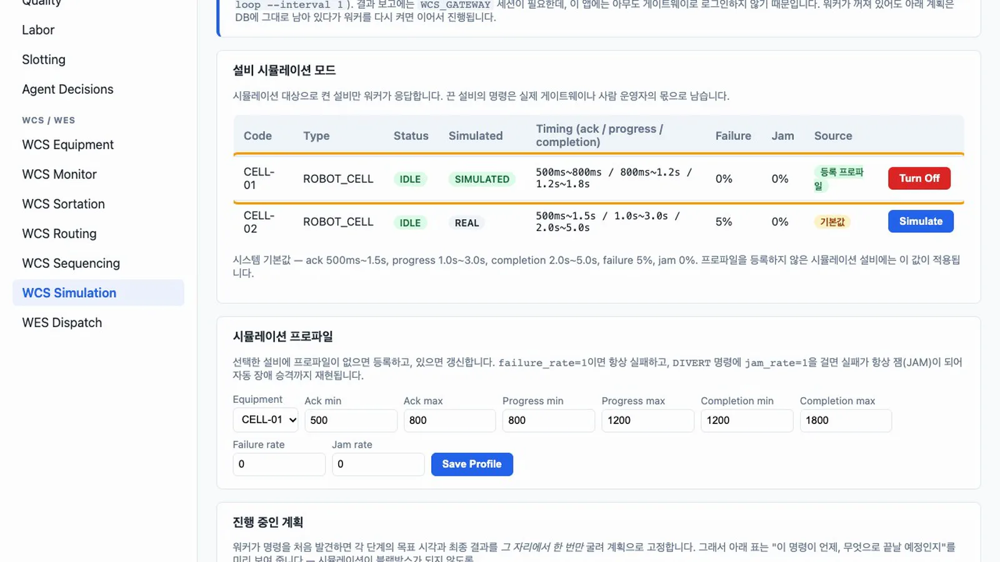
프로파일 - 출고 단위 등록. WCS Sequencing에서 Open Wave를 누르고 아래 세 건을 Create Outbound Order로 넣습니다.
| Order Number | Store Code | Product | Qty | Weight (kg) | Volume (L) |
|---|---|---|---|---|---|
| OB-0001 | STORE-042 | SKU-A-001 | 10 | 4.2 | 3.1 |
| OB-0002 | STORE-042 | SKU-A-002 | 4 | 6 | 5 |
| OB-0003 | STORE-077 | SKU-A-003 | 2 | 240 | 10 |
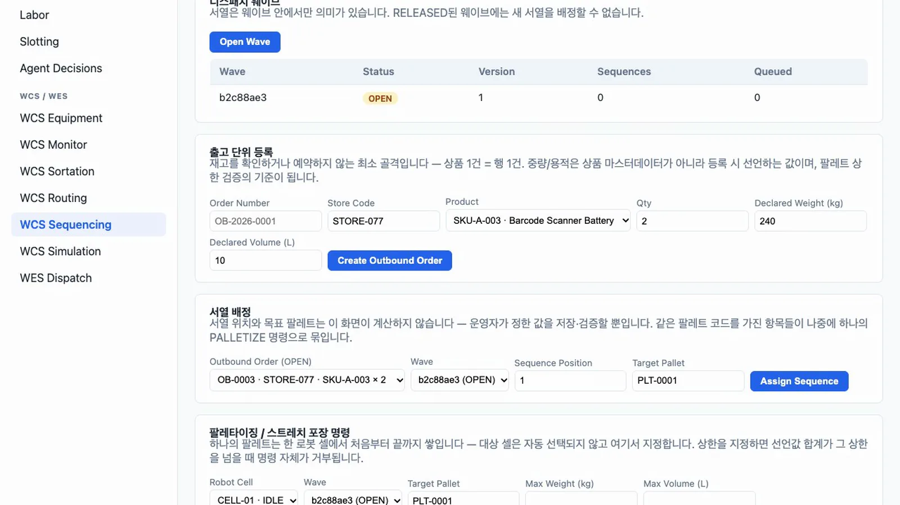
출고 단위 - 서열 배정. Assign Sequence로 OB-0001은 위치 1, OB-0002는 위치 2에 배정하고 둘 다 팔레트
PLT-042-01에 넣습니다. OB-0003은 위치 3에 배정하고 팔레트PLT-077-01에 넣습니다. 팔레트 현황에서PLT-042-01의 선언 중량 합계는 10.2 kg, 용적은 8.1 L입니다.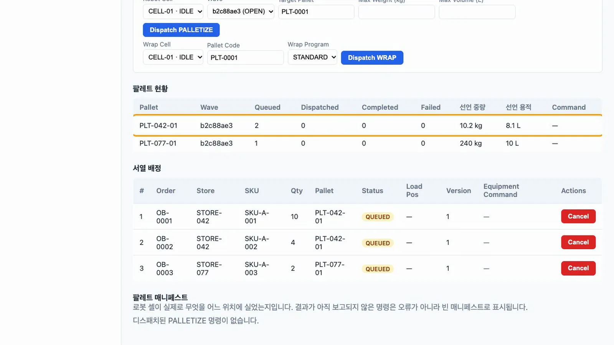
팔레트 현황 - 상한 확인. Robot Cell
CELL-01, Target PalletPLT-077-01, Max Weight 100으로 Dispatch PALLETIZE를 누릅니다.INVALID: declared weight 240 kg exceeds max_weight_kg 100 for pallet PLT-077-01로 거부되고 명령은 전송되지 않습니다.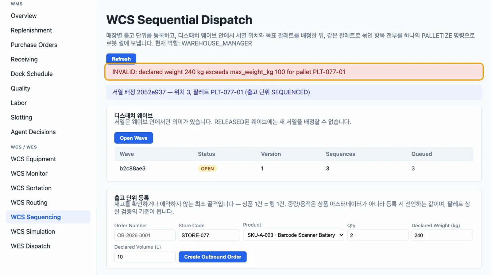
상한 거부 - 명령 보내기. Target Pallet
PLT-042-01, Max Weight 250, Max Volume 500으로 Dispatch PALLETIZE를 누릅니다. 「CELL-01에 2건 (선언 10.2kg / 8.1L)」이 보이고, 두 항목이 명령 하나로 묶여DISPATCHED가 됩니다.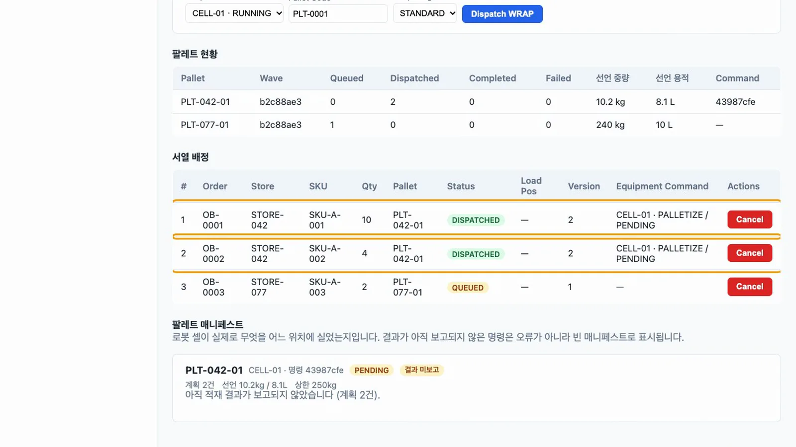
DISPATCHED - 워커 실행.
mcp폴더에서 워커를 실행합니다.--once는 대기 중인 명령을 끝까지 처리하고 종료합니다. 계속 실행하려면--loop --interval 1을 씁니다..venv/bin/python -m wms_mcp.simulator.wcs_gateway_simulator --oncePALLETIZE … -> ACKNOWLEDGED,-> IN_PROGRESS,-> COMPLETED로그가 차례로 나옵니다.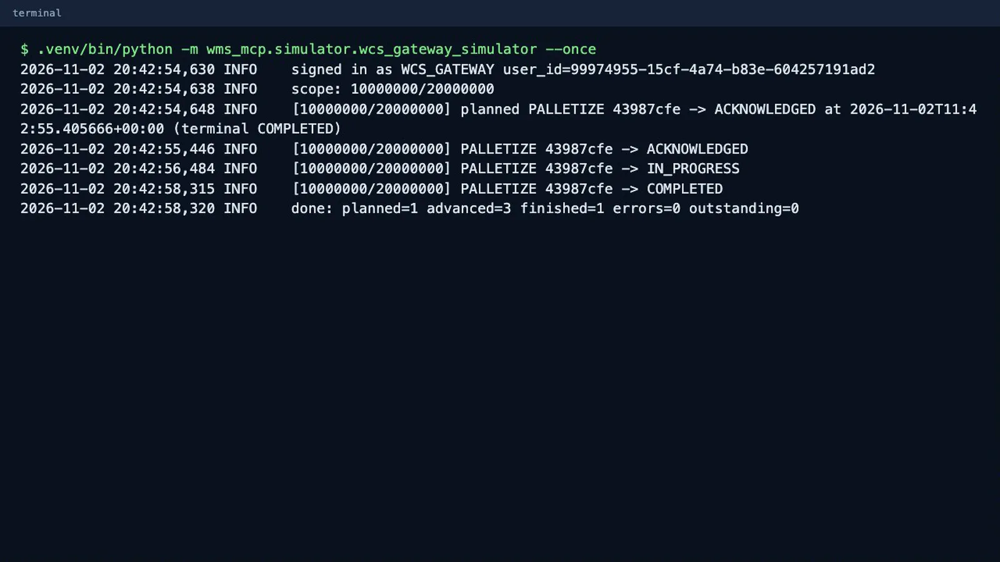
워커 로그 - 매니페스트. WCS Sequencing을 새로 고칩니다. 위치 1, 2의 상태는
COMPLETED, Load Pos는 1, 2입니다. 팔레트 매니페스트의PLT-042-01은SUCCESS, 두 항목 모두LOADED입니다. 실측 중량은 시뮬레이터가 선언값을 그대로 돌려준 것입니다.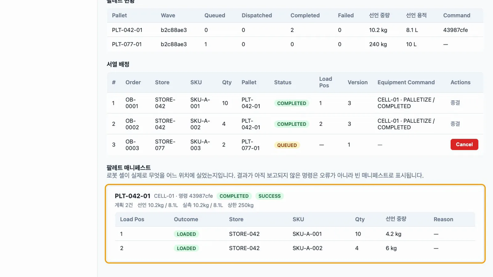
매니페스트 - 실패 경로. WCS Simulation에서 Failure rate를 1로 저장합니다. WCS Sequencing에서
PLT-077-01을 Max Weight 300으로 보냅니다. 워커를--tick으로 한 번 실행하면 진행 중인 계획에 Planned outcomeFAILED/ABORTED가 보입니다. 결과는 계획을 세울 때 이미 정해집니다.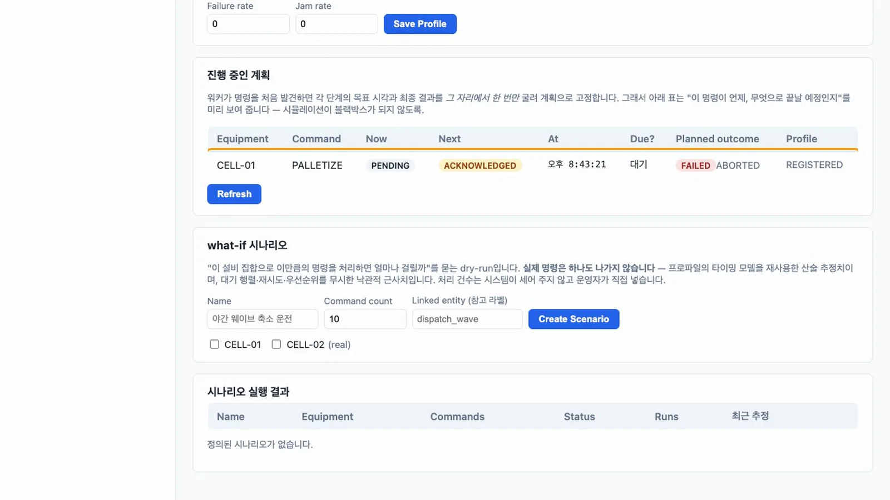
계획 미리 보기 - 실패 결과. 워커를
--once로 실행합니다.PLT-077-01은FAILED/ABORTED, 항목은SKIPPED(SIMULATED_ABORT), 서열 3은FAILED입니다.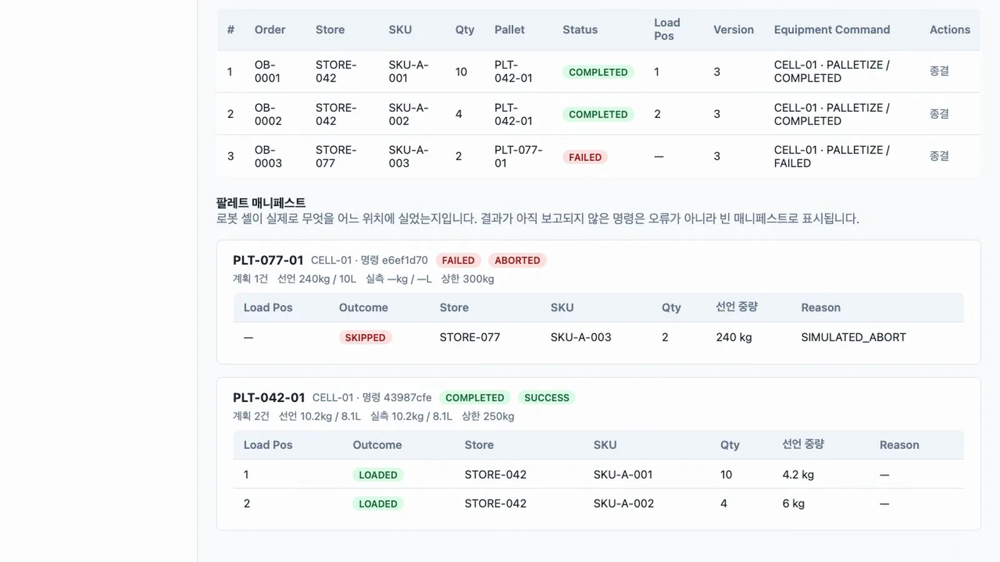
ABORTED - 가정 시나리오. WCS Simulation의 what-if에서 Name
야간 축소 운전, Command count 10, Linked entitydispatch_wave,CELL-01과CELL-02를 고르고 Create Scenario를 누른 뒤 Run을 누릅니다. 이 실행에서는 「5회전 · 20.1s · 실패 5건」이 나왔습니다.CELL-01의 실패율을 1로 바꿔 둔 상태라 실패가 많고, 값은 프로파일에 따라 달라집니다.CELL-02는 프로파일이 없어DEFAULT_PROFILE_APPLIED경고가 표시됩니다. 이 과정에서 설비 명령은 한 건도 늘지 않습니다.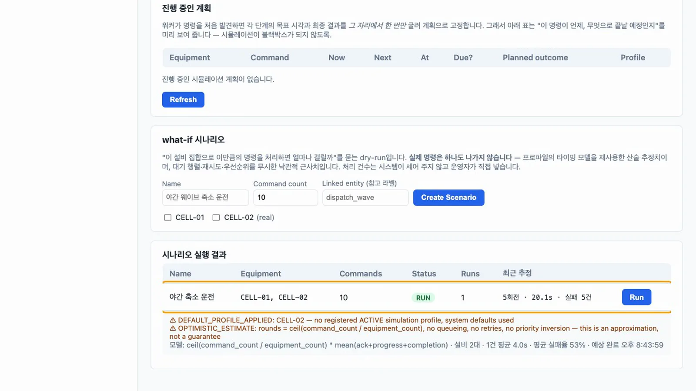
시나리오
같은 영역의 다른 화면#
이 장에서는 합성 데이터 없이 끝까지 실행할 수 있는 서열 출고와 시뮬레이션을 다룹니다. 다른 세 화면도 저장소에 있고, 그 흐름은 frontend/playwright/e2e/의 스펙에서 확인할 수 있습니다.
| 화면 | 하는 일 | 알아 둘 점 |
|---|---|---|
| Dock Schedule | 도크 예약, 체크인, 도킹, 출차. 같은 도크의 겹치는 시간은 거부 | 입고 예약에는 확정된 PO가 필요합니다 |
| Labor | 작업 시작·완료 기록, 생산성 집계, 필요 인원 추정 | 추정은 머신러닝이 아닌 단순 비율입니다 |
| Slotting | 출하 빈도(ABC)와 위치 접근성으로 재배치 추천, 승인 후 적용 | 앱에 출고 차감 함수가 없어 빈도 신호가 비어 있습니다. 스펙은 합성 원장 행을 넣어 시험합니다 |
확인 문제#
왜 240kg 팔레트는 로봇 셀까지 가지 않았나요?
명령을 보낼 때 선언 중량 합계를 상한과 비교합니다. 상한을 넘으면 함수가 INVALID로 거부해 명령 행이 만들어지지 않습니다.
시뮬레이터는 왜 데이터베이스 안의 예약 작업이 아니라 바깥 프로세스인가요?
결과 보고 함수는 로그인한 WCS_GATEWAY 세션을 요구합니다. 바깥 프로세스가 실제 설비 연동과 똑같이 로그인해 호출하므로, 업무 오더 전파나 걸림 자동 장애 같은 후속 처리도 그대로 실행됩니다.
가정 시나리오를 실행하면 설비가 움직이나요?
아닙니다. 프로파일의 평균 시간으로 추정만 계산합니다. 설비 명령을 만들지 않습니다.